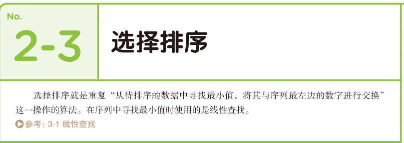
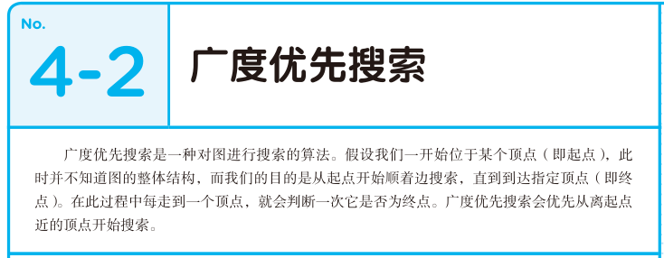
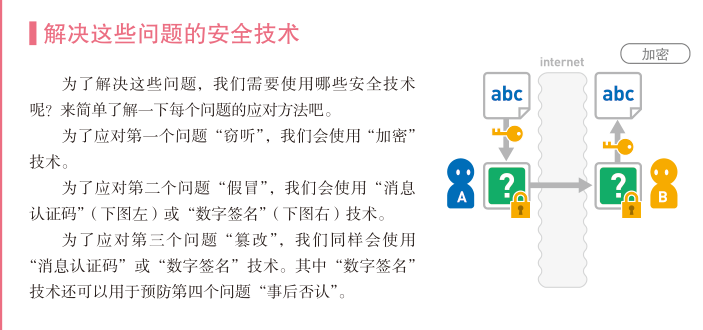
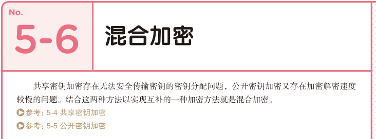

0 算法的基本知识
0-1 什么是算法
算法与程序的区别
排列整数的算法： 排序
0-2 运行时间的计算方法
如何求得运行时间
运行时间的表示方法
1 数据结构
1-1 什么是数据结构
决定了数据的顺序和位置关系
选择合适的数据结构以提高内存的利用率
1-2 链表
线性查找
1-3 数组
解说
补充说明
1-4 栈
解说
1-5 队列
解说
1-6 哈希表
解说
补充说明
1-7 堆
解说
1-8 二叉搜索树
解说
补充说明
2 排序
2-1 什么是排序
2-2 冒泡排序
不稳定的排序解说
2-3 选择排序

解说
2-4 插入排序
解说
2-5 堆排序
解说
补充说明
2-6 归并排序
解说
2-7 快速排序

补充说明

解说

3 数组的查找
3-1 线性查找
解说
3-2 二分查找
解说
补充说明
4 图的搜索
4-1 什么是图
图可以表现各种关系
加权图
有向图
图能给我们带来哪些便利
4-2 广度优先探索

解说
补充说明

4-3 深度优先探索
解说
4-4 贝尔曼-福特算法
解说
补充说明
4-5 狄克斯特拉
解说
补充说明
4-6 A*算法
解说
5 安全算法
5-1 安全和算法
传输数据的四个问题
解决这些问题的安全技术

知识点
5-2 加密的基础知识
5-3 哈希函数
解说
应用示例
5-4 共享密钥加密
解说
5-5 公开密钥加密

补充说明
解说
5-6 混合加密

解说
5-7 迪菲-赫尔曼密钥交换
解说
补充说明
5-8 消息认证码
解说
补充说明
5-9 数字签名
解说
5-10 数字证书
解说
补充说明
6 聚类
6-1 什么是聚类

将相似的对象分为一组
如何定义相似
在模式识别和机器学习中有一个相似度的概念定义数据间的差距
符合条件的算法
6-2 k-means算法
解说
补充说明
7 其他算法
7-1 欧几里得算法
解说
7-2 素性测试

解说

补充说明
7-3 网页排名
解说
7-4 汉诺塔
解说

补充说明